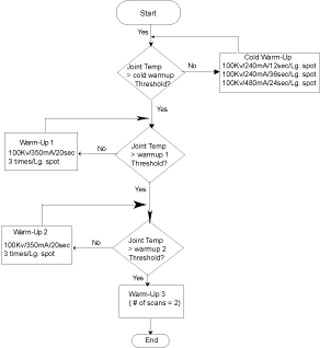

Operating Documentation
Direction 5196839-800, Rev# 6
RT16 and Xtra Service Info Adv
Operating Documentation |
Tube Warmup resides under the [DAILY PREPARATION] selection on the Exam Rx top level desktop. [TUBE WARMUP] includes the scans required to bring the tube to a safe operating point for patient scanning.
Media File 1: Tube Warmup process

Illustration 1: Tube Warmup process
